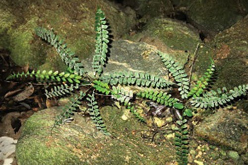

Đa dạng thực vật ở Vườn quốc gia Phong Nha - Kẻ Bàng
Vườn quốc gia Phong Nha – Kẻ Bàng nằm ở trung điểm của Trung Trung Bộ, trong vùng sinh thái bắc Trường Sơn thuộc vùng sinh địa Indo-Malaya; với khí hậu nhiệt đới ẩm gió mùa có lượng mưa trung bình hàng năm trên 2.000mm và độ ẩm trung bình hằng năm trên 80%; cùng với sự đa dạng của các sinh cảnh như rừng trên núi đá vôi, rừng trên núi đất, rừng chuyển tiếp; các quá trình vận động địa chất đã tạo nên các dạng núi đá vôi, các hệ thống sông suối ngầm và sự đa dạng của các loại đất như đất feralit, đất đen macgalit-feralit, đất dốc. Đây là những yếu tố quan trọng tạo nên tính đa dạng về thực vật và sự giàu có về các yếu tố đặc hữu. Phong Nha - Kẻ Bàng ghi nhận sự có mặt của 2.951 loài thực vật thuộc 1.006 chi, 198 họ, 62 bộ, 11 lớp, 6 ngành. Trong đó có 112 loài được ghi trong Sách đỏ Việt Nam, 39 loài có tên trong Nghị định 32-2006/NĐ-CP, 121 loài được ghi trong Sách đỏ IUCN, 01 loài có tên trong các phụ lục CITES. Sự đa dạng về hệ thực vật ở Vườn quốc gia Phong Nha - Kẻ Bàng bao gồm cả đa dạng về thành phần loài, về nguồn gen và tài nguyên thực vật.
Đa dạng về thành phần loài: có 2.951 loài thực vật, trong đó:
Lớp Mộc tặc (lớp Cỏ tháp): có 02 loài, gồm mộc tặc trãi và mộc tặc yếu.
Lớp Quyển bá: có 09 loài, trong đó 01 loài được ghi trong Sách đỏ Việt Nam.
Lớp Thạch tùng: có 11 loài.
Lớp Một lá mầm: có 555 loài, trong đó có 28 loài được ghi trong Sách đỏ Việt Nam, 15 loài có tên trong Nghị định 32-2006/NĐ-CP, 16 loài được ghi trong Sách đỏ IUCN.
Lớp Hai lá mầm: có 2.111 loài, trong đó có 78 loài được ghi trong Sách đỏ Việt Nam, 20 loài có tên trong Nghị định 32-2006/NĐ-CP, 88 loài được ghi trong Sách đỏ IUCN, 01 loài có tên trong các phụ lục CITES.
Lớp Tuế: có 02 loài, gồm Tuế núi đá và Thiên tuế chìm, trong đó cả 02 loài này đều được ghi trong Sách đỏ Việt Nam (thuộc nhóm nguy cấp và sắp bị đe doạ), Nghị định 32-2006/NĐ-CP và Sách đỏ IUCN.
Lớp Dây gắm: có 06 loài, trong đó có 04 loài có tên trong Sách đỏ IUCN.
Lớp Thông: có 07 loài, trong đó có 01 loài được ghi trong Sách đỏ Việt Nam, 02 loài có tên trong Nghị định 32-2006/NĐ-CP, 06 loài được ghi trong Sách đỏ IUCN.
Lớp Dương xỉ toà sen: có 14 loài.
Lớp Dương xỉ: có 233 loài, trong đó có 02 loài được ghi trong Sách đỏ Việt Nam, 05 loài được ghi trong Sách đỏ IUCN.
Lớp Quyết lá thông: có 01 loài (Lõa tùng trần).
Bách xanh đá (Calocedrus rupestris Averyanov) – loài đặc hữu ở VQG PN-KB
Đa dạng về nguồn gen thực vật: Nằm ở miền trung Việt Nam nên Phong Nha - Kẻ Bàng là nơi giao thoa của 2 luồng thực vật từ phía bắc và nam, đây là ranh giới tận cùng phía Nam của một số loài thực vật phía Bắc như: Nghiến (Burretiodendron hsienmu), Chò nước (Platanus kerrii), Chò nâu (Dipterocarpus retusus), Cây rẫm (Burcera tonkinensis)... và cũng là ranh giới tận cùng phía Bắc của một số loài thực vật phía Nam như: Dầu ke (Dipterocarpus kerrii) Dầu đọt tím (Depterocarpus grandiflorus), Xoay (Dialium cochinchinensis), Giáng hương quả to (Pterocarpus macrocarpus), ... Mặt khác, do địa hình khối núi đá vôi tương đối độc lập nên Phong Nha – Kẻ Bàng còn là trung tâm phân bố của 419 loài thực vật đặc hữu của Việt Nam (trong đó có 28 loài Lan).
Theo khung phân loại các yếu tố địa lý thực vật của Nguyễn Nghĩa Thìn và Lê Trần Chấn (1999): Thực vật ở Phong Nha – Kẻ Bàng gồm có 18 yếu tố địa lý khác nhau, trong đó yếu tố đặc hữu Đông Dương chiếm nhiều loài nhất với 509 loài và thấp nhất là yếu tố ôn Bắc Đới chỉ có 01 loài.
Đa dạng về tài nguyên thực vật: Vườn quốc gia Phong Nha - Kẻ Bàng có trên 800 loài cây tài nguyên, có giá trị về khoa học và kinh tế thuộc 7 nhóm công dụng như: nhóm lấy gỗ, nhóm cây dầu nhựa, nhóm cây làm thuốc, nhóm cây ăn được, nhóm cây dùng đan lát và cho sợi, nhóm cây làm cảnh và bóng mát và nhóm cây cho thuốc nhuộm.

Dương xỉ Quảng Bình (Polystichum quangbinhense) được phát hiện ở VQG PN-KB
Đáng chú ý trong các kết quả nghiên cứu về thực vật là việc phát hiện thêm 4 loài mới cho khoa học, bao gồm: Thu hải đường (Begonia vietnamensis), Phòng kỷ Quảng Bình (Aristolochia quangbinhensis Do), Bùng bục Phong Nha (Mallotus phongnhaensis), Dương xỉ Quảng Bình (Polystichum quangbinhense) và phát hiện thêm một loài đặc hữu hẹp cho khu vực núi đá vôi - loài Bách xanh đá (Calocedrus rupestris Averyanov) 500 tuổi, diện tích khoảng 5.000 ha, mọc ưu thế trên núi đá vôi ở độ cao trên 700m được xem là sinh cảnh rừng độc đáo nhất bởi tầm quan trọng toàn cầu và giá trị bảo tồn, đây là một loài thực vật cổ và đặc hữu của Việt Nam, hiện chỉ còn sót lại chủ yếu ở Vườn quốc gia Phong Nha - Kẻ Bàng. Ngoài ra còn có các phát hiện về 1 chi đặc hữu đơn loài Oligoceras thuộc họ Thầu dầu (Euphorbiaceae) với loài Oligoceras eberhardtii rất hiếm ở Việt Nam.